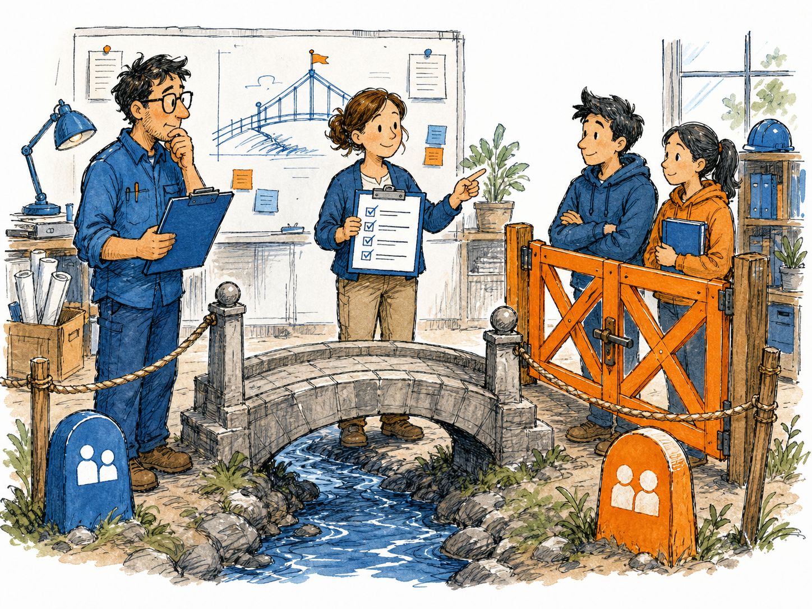
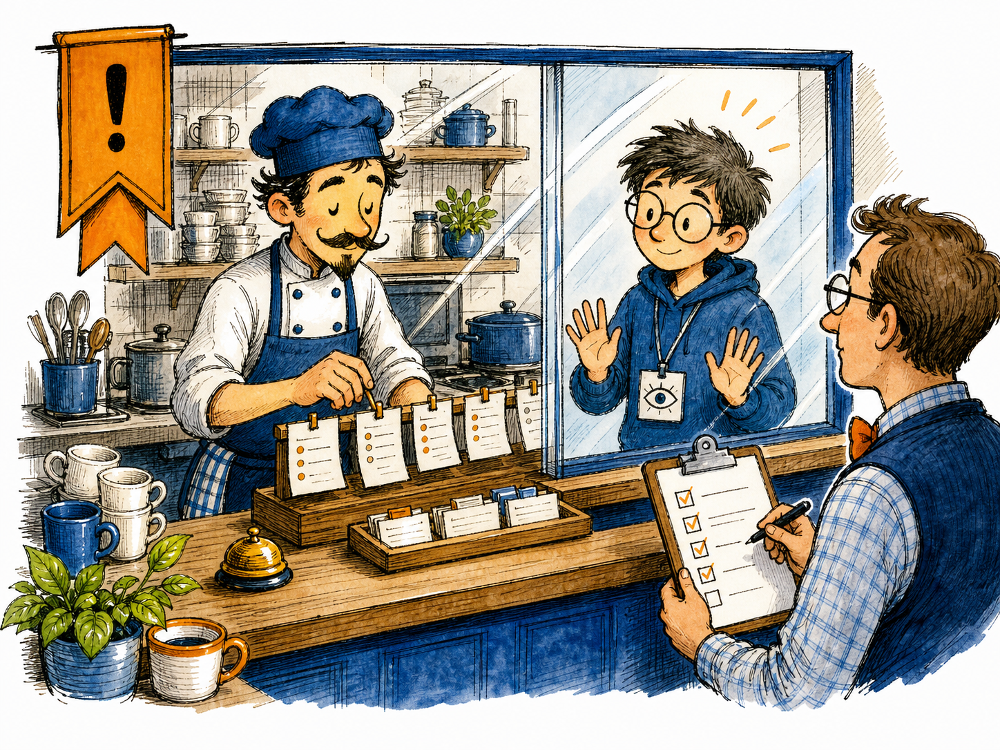
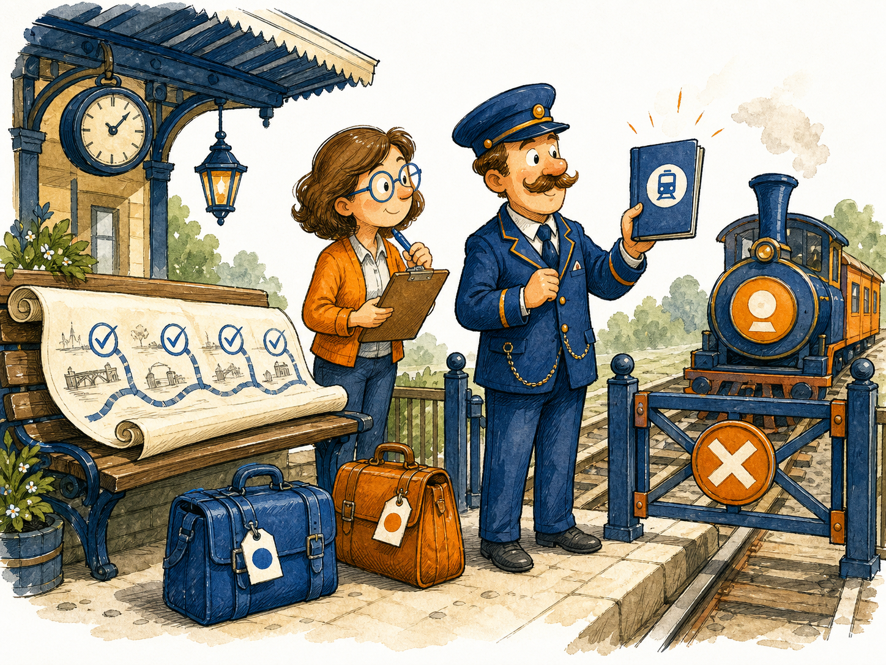

KANDA Reasoner Help - Routing Signal Scorer v3
BridgeAdviser to Pilot/Copilot
A local help chapter for understanding the frozen post-Adviser bridge, its non-authority boundary, and the next safe P0 scope.

What This Help Page Covers
Technical: The 049 source records that the Adviser phase is closed, the post-Adviser bridge is complete through M35, and runtime Pilot/Copilot behavior is still not active. This help page summarizes the phase boundary, the non-authority doctrine, the frozen milestone chain, and the next safe work item: P0, a governed Pilot/Copilot scope charter and entry-gate design.
In plain English: The bridge is like a finished railway platform between two parts of the project. The route has been inspected and closed safely, but nobody gets to drive the next train yet. The next move is to write the ticket rules for the new trip, not to start the train.
Further reading: Source evidence: .project_reference/chats/049 From Adviser to Pilot_Copilot.md; active help layout prompt: kanda_prompt_workspace/prompt_library/ACTIVE_PROMPTS/12_generalized_project_canons/desktop_help_document_layout_canon.md.
Current Frozen State
| Area | State | Meaning |
|---|---|---|
| Adviser | Closed and frozen through M16 | The offline Adviser runway exists and remains advisory-only. |
| Shadow-mode bridge | Closed and frozen | The bridge defined observation boundaries without runtime authority. |
| Auxiliar/Assistant bridge | Closed and frozen | Assistance design and non-runtime assistance evidence were completed without activating Assistant. |
| Pilot/Copilot boundary | Designed and frozen | The future boundary exists, but Pilot/Copilot is not active. |
| M35 handoff closure | Frozen | The bridge roadmap is closed: 18 done, 0 to go. |
| Next safe action | P0 only | Start a new governed Pilot/Copilot scope charter and entry gate. |
The Authority Boundary

Technical: The bridge doctrine is: ML or ML-like logic may recommend, observe, compare, or produce bounded evidence; the router and governance decide. The frozen bridge forbids route authority, prompt auto-loading, runtime activation, persistence, gold mutation, registry mutation, provider calls, embeddings, and freeze actions.
In plain English: The helper can stand at the cafe window and notice whether the order looks wrong. It cannot step behind the counter, serve the customer, rewrite the menu, or open the cash register.
Further reading: 049 bridge sections on Current Project State, Smoothness and Error-Prevention Strategy, and Patch Delivery Rules to Preserve.
No runtime authority. The bridge can explain what future bounded systems may observe. It does not activate Pilot, Copilot, Assistant, prompt loading, route selection, persistence, or candidate promotion.
What Must Not Happen Next
Technical: Runtime activation, prompt loading, provider calls, persistence, gold-set mutation, registry mutation, freeze bypass, and route authority would cross from frozen bridge design into ungoverned autonomy. These actions violate the non-authority boundary established by M17 through M35.
In plain English: The bridge is finished, but that does not mean the next vehicle is already allowed to move. The rules for the next vehicle must be written, checked, and frozen first.
- Do not activate Pilot or Copilot.
- Do not enable runtime shadow mode.
- Do not let Pilot route or load prompts.
- Do not write reports, mutate gold sets, mutate registries, or call providers.
- Do not skip validation and freeze before the next governed milestone.
The Next Safe Step: P0

Technical: The next safe action is P0 - Routing Signal Scorer v3 Pilot/Copilot Scope Charter and Entry Gate Design v1. P0 must remain design-only. It may define scope, entry criteria, forbidden operations, and validation expectations, but it must not implement Pilot runtime, activate Pilot/Copilot, load prompts, add persistence, mutate gold sets, or grant routing authority.
In plain English: The next chapter begins by writing the boarding rules. It does not start the engine.
Further reading: 049 sections Next Chat Opening Instruction and Final Current Project State.
Operating Rule
The Adviser-to-Pilot/Copilot bridge is closed and frozen; the next chapter is Pilot/Copilot P0 as a governed scope charter, not runtime activation.
Quick Checklist
- Classify the next request as Routed Work Path.
- Load the active prompt/router context.
- Declare the owning box and allowed files.
- Keep each patch to one concept.
- Provide validation commands.
- Add no runtime authority, prompt loading, persistence, provider calls, gold mutation, registry mutation, or freeze bypass.
- Freeze only after local validation and human confirmation.